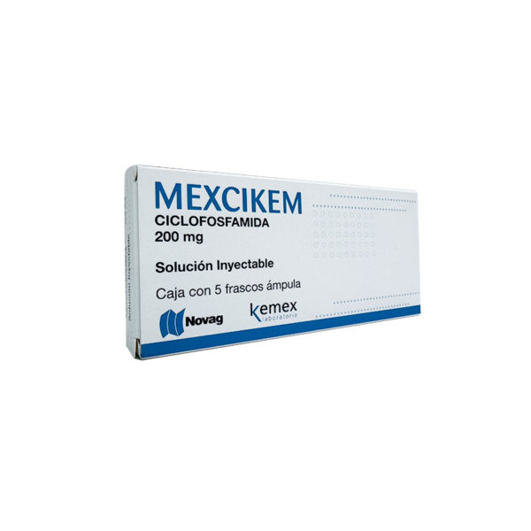
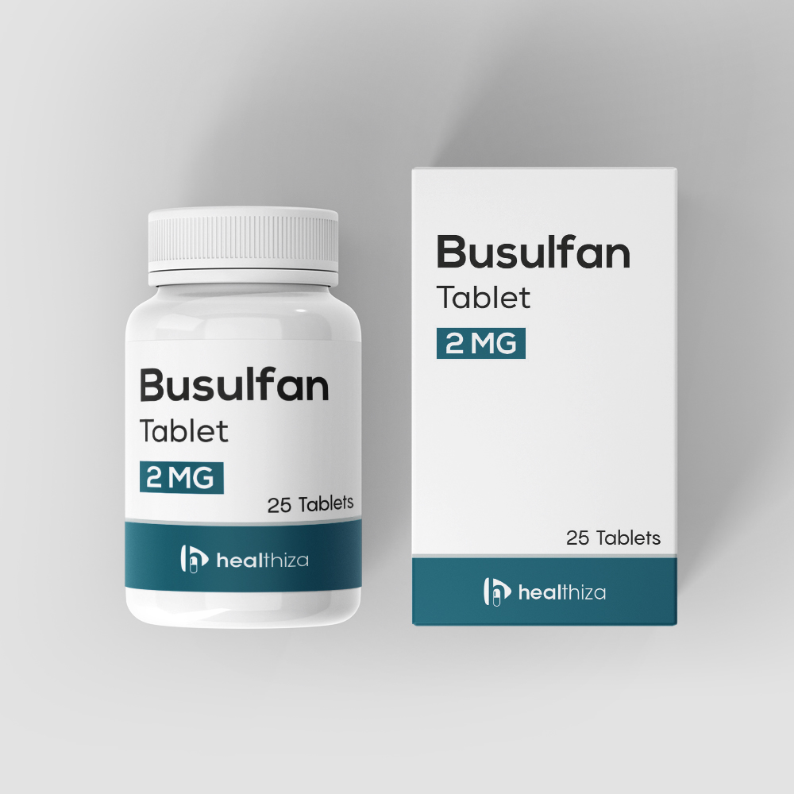

Mecanismo de Acción
- Análogos del folato (metotrexato)
Inhibe la dihidrofolato reductasa (DHFR), bloqueando la conversión de dihidrofolato a tetrahidrofolato, esencial para la síntesis de purinas y timidilato. Esto inhibe la replicación del ADN, especialmente en células en fase S.
- Análogos de la purina (Mercaptopurina)
Análogo de hipoxantina que se convierte en tioguanina nucleótido, inhibiendo la sintetasa de novo de purinas y la incorporación de nucleótidos a ADN y ARN, bloqueando la replicación.
- Análogos de la pirimidina (Capecitabina)
Profármaco que se convierte en 5-fluorouracilo (5-FU), inhibiendo la timidilato sintasa, lo que impide la conversión de dUMP a dTMP, bloqueando la síntesis de ADN. También se incorpora a ARN, alterando su función.
Indicaciones Terapéuticas
- Análogos del folato (metotrexato)
- Leucemia linfoblástica aguda (LLA)
- Linfoma no Hodgkin
- Coriocarcinoma
- Cáncer de mama, pulmón, cabeza y cuello
- Enfermedades autoinmunes: artritis reumatoide, psoriasis, lupus
- Análogos de la purina (Mercaptopurina)
- Leucemia linfoblástica aguda (LLA)
- Leucemia mieloide crónica (como mantenimiento)
- Algunas enfermedades inflamatorias intestinales
- Análogos de la pirimidina (Capecitabina)
- Cáncer colorrectal (adyuvante y metastásico)
- Cáncer de mama metastásico
- Cáncer gástrico
Contraindicaciones
- Análogos del folato (metotrexato)
- Hipersensibilidad
- Insuficiencia hepática o renal grave
- Mielosupresión importante
- Embarazo (teratogénico)
- Infecciones activas
- Análogos de la purina (Mercaptopurina)
- Hipersensibilidad
- Mielosupresión severa
- Embarazo y lactancia
- Deficiencia de TPMT (tiopurina metiltransferasa)
- Análogos de la pirimidina (Capecitabina)
- Hipersensibilidad
- Insuficiencia renal grave (ClCr <30 ml/min)
- Leucopenia severa
- Embarazo y lactancia
Posología
- Análogos del folato (metotrexato)
- Oncológica: 20-40 mg/m² IV, IM o intratecal, según protocolo. Dosis altas requieren rescate con leucovorina (ácido folínico).
- Autoinmunes: 7.5-25 mg/semana por vía oral o subcutánea.
- Análogos de la purina (Mercaptopurina)
- Adultos y niños (LLA): 2.5 mg/kg/día por vía oral, ajustado según respuesta y toxicidad.
- Análogos de la pirimidina (Capecitabina)
- 1250 mg/m² por vía oral cada 12 h durante 14 días, seguido de 7 días de descanso (21 días/ciclo)
- Tomar con agua dentro de los 30 minutos después de comer
Reacciones adversas
- Análogos del folato (metotrexato)
- Mielosupresión (anemia, leucopenia, trombocitopenia)
- Mucositis
- Hepatotoxicidad
- Nefrotoxicidad (a altas dosis)
- Neumonitis
- Alopecia
- Teratogenicidad
- Análogos de la purina (Mercaptopurina)
- Mielosupresión
- Hepatotoxicidad (elevación de transaminasas, ictericia)
- Náuseas, vómitos
- Estomatitis
- Infecciones
- Análogos de la pirimidina (Capecitabina)
- Diarrea
- Síndrome mano-pie (eritrodisestesia palmoplantar)
- Mucositis
- Náuseas y vómitos
- Fatiga
- Mielosupresión
Interacciones medicamentosas
- Análogos del folato (metotrexato)
- AINEs y antibióticos (trimetoprim-sulfametoxazol): aumentan toxicidad hematológica
- Alcohol: incrementa hepatotoxicidad
- Fármacos nefrotóxicos: reducen excreción renal
- Análogos de la purina (Mercaptopurina)
- Alopurinol: inhibe la xantina oxidasa, requiere reducir dosis de 6-MP a un 25-33%
- Warfarina: disminuye efecto anticoagulante
- Vacunas vivas: riesgo de infección grave
- Análogos de la pirimidina (Capecitabina)
- Warfarina: riesgo aumentado de sangrado (vigilar INR)
- Sorivudina (y análogos): contraindicado → riesgo de toxicidad letal
- Antiácidos: pueden modificar absorción
Presentacións
- Análogos del folato (metotrexato)
- Tabletas: 2.5 mg, 10 mg
- Solución inyectable: 50 mg/2 ml, 500 mg/20 ml
- Ampollas para uso intratecal
- Análogos de la purina (Mercaptopurina)
- Análogos de la pirimidina (Capecitabina)
- Tabletas recubiertas: 150 mg y 500 mg